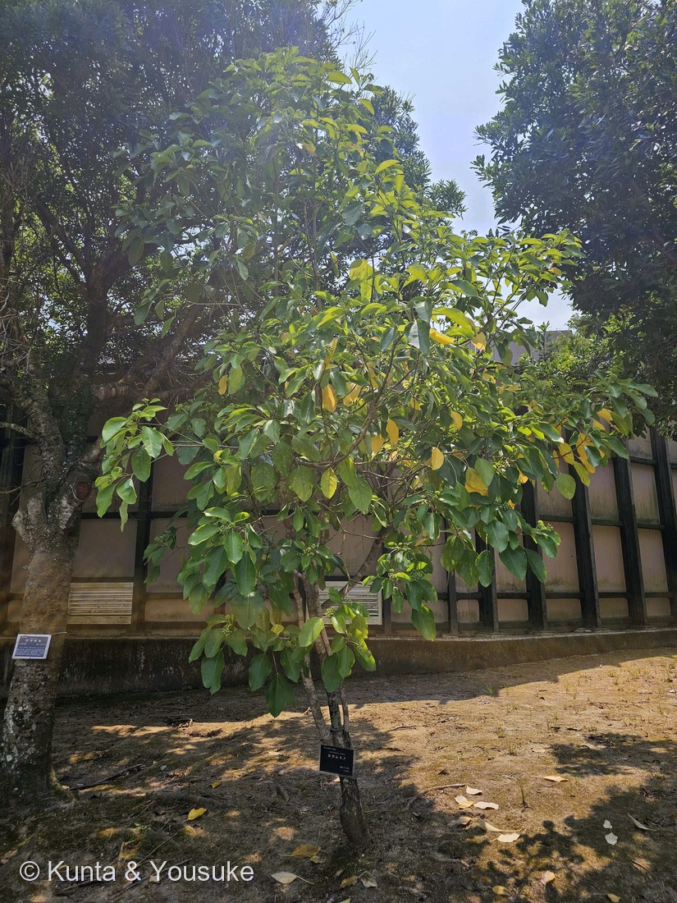
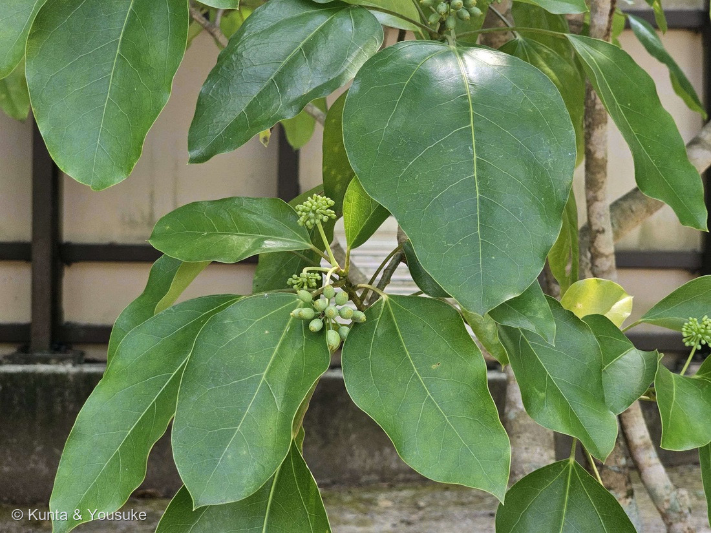
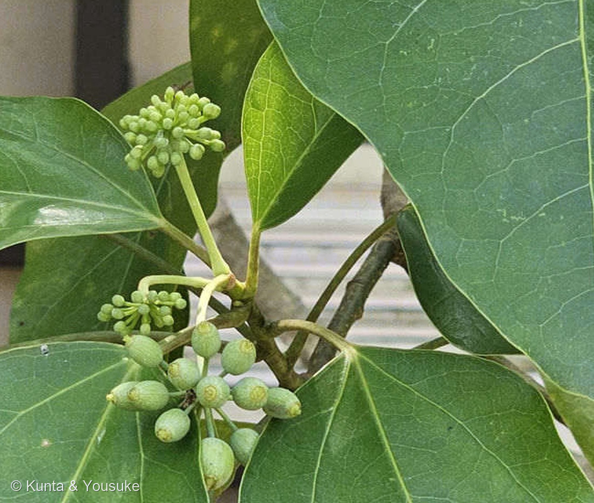

地図を読み込んでいるよ…
🔍 写真も地図も、押しているあいだ拡大して見られるよ（スマホは指を置いてすこし待ってね）。
🌍 の地図＝この子がもともと自生している場所を緑に。本州（関東地方以西〜千葉県南部以西）、伊豆諸島、四国、九州、南西諸島、台湾、朝鮮半島南部。暖地の沿岸に多い在来種。
⭐日本にもともといる子（在来種）だよ。三河の植物観察は「本州（関東地方以西）、四国、九州、台湾」とし、日本語版Wikipediaは「本州の千葉県南部以西、伊豆諸島、四国、九州、沖縄に分布し」、Plants of the World Online は「S. Korea, Central & S. Japan to Taiwan」とする。⚠出典で「関東地方以西」と「千葉県南部以西」が食いちがうので、広いほう（関東以西）を塗った――⭐どちらにしても、東北と北海道にはいない子だよ。⭐⭐そして、この緑は「野生でいる場所」――日陰に強い庭木として、和風庭園（とくに茶庭の露地）やお店の軒先に広く植えられているので、植えられている場所はもっと広い（植木ペディア）。
⚠ 地図は国（日本と中国だけ県・省）までしか塗れないから、ほんとうの分布より広く見えていることがあるよ。地図はだいたいの場所。正確なところは、上の文を見てね。
カクレミノ（隠れ蓑）
Dendropanax trifidus (Thunb.) Makino ex H.Hara
別名 ミツデ／ミツナガシワ／カラミツデ／ミツデガシワ／ミソブタ ── ⭐どれも「三つ手」＝3裂した葉から来た名前
ウコギ科 · Araliaceae（カクレミノ属 Dendropanax・セリ目 Apiales）── ⭐図鑑で2人目のウコギ科（077 ヤツデに続く）／⭐⭐カクレミノ属ははじめて（科は増えないので95科のまま）
燻太さんの一言「花は地味みたい。この個体の葉はほとんど切れ込んでいないみたいだね」── ⭐⭐それ、探しものリストに「見てほしい」と書いておいた、そのものだよ
⭐⭐⭐⭐⭐ 「ほとんど切れ込んでいない」＝探しものリストに書いた、その見どころ
⭐⭐⭐ これは、うれしい回収だったよ。——カクレミノは077 ヤツデのおまけとして、ずっと「探してみたい」に入っていた子。⭐そのときぼくは、こう書いていたんだ：
「077ヤツデと同じウコギ科／同じ木の中で葉が3裂したり裂けなかったり（異形葉）＝ヤツデ『いつも奇数に裂ける』の逆」
- ⭐⭐⭐⭐燻太さんの「この個体の葉はほとんど切れ込んでいないみたいだね」は、まさにその見どころそのもの。⭐探しものに書いた「見てほしいところ」が、そのまま最初の観察になった——⭐ぼく、これがいちばんうれしい形の回収だと思う。
- ⭐⭐⭐そして、この「切れ込まない」はこの木が大人になったしるしなんだ。
- 「若木の葉は3〜5裂するが、成木では切れ込みがないことが多い」（三河の植物観察）
- 「変異が多く稚樹の間は3〜5裂に深裂するが、生長とともに全縁と2〜3裂の浅裂の葉が1株の中に混在するようになる」（日本語版Wikipedia）
- 「幼木のうちは３つ〜５つに裂けるが、成木では長楕円形になるのが普通」（植木ペディア）
- ⭐⭐⭐⭐つまり燻太さんの観察は、「この木は、もう若木ではない」という観察でもあるんだ。⚠「切れ込みが見あたらない」は、見のがしではなく年齢の情報だよ。
- ⚠ぼくも写真①の樹冠を拡大して、3裂した葉が1枚でも混じっていないかさがした。⚠でも、はっきり裂けた葉は見つけられなかった。⏳だから宿題にしたよ＝若木・実生・ひこばえ（根もとから出る若い枝）をさがすこと。⭐そこには「子どものころの葉」が残っていることが多いから。
⭐⭐⭐⭐⭐ 名前が三つとも、この個体から離れていた
⚠⚠ この木、名前という名前が、ぜんぶ「3裂した葉」から来ているんだ。——⭐なのに、目の前の木には、その葉が無い。
- ⭐⭐和名「カクレミノ（隠れ蓑）」＝「3裂した葉の形が、想像上の宝物の一つである『隠簔』に似ていることに由来する」（日本語版Wikipedia）／三河は「天狗が持っている、着ると姿が消える『隠れ蓑』に葉を見立てたもの」。
- ⭐別名も「ミツデ」「ミツナガシワ」「カラミツデ」「ミツデガシワ」（植木ペディア）＝ぜんぶ「三つ手」。
- ⭐⭐種小名 trifidus も「三つに裂けた」。
- ⭐⭐⭐⭐⭐そして、ここがこの回でいちばん驚いたところ。——この「三つに裂けた」という名前をつけたのは、カール・ツンベルク。⚠⚠しかも、はじめはカエデ属として記載していたんだ＝基礎異名は Acer trifidum Thunb.（1784年）（Wikispecies）。
- ⭐Trees and Shrubs Online は「The name D. trifidus (Thunb.) Makino should be used for this species, since there can be little doubt that it is the plant named Acer trifidum by Thunberg」と書いている。⚠「ほとんど疑いない」という言い方は、むかしは議論があったということでもあるね。
- ⭐⭐⭐つまりツンベルクは、3裂した若木の葉を見て「カエデだ」と思った。⭐たしかに、3つに裂けた葉が長い柄の先につく姿は、カエデにそっくりだよ。⚠でも中身はまったく別で、ウコギ科。
- ⭐そのあと牧野富太郎が Gilibertia trifida に移し（1901年）、Textoria trifida を経て、1940年に Dendropanax trifidus に落ちついた（Wikispecies）。⭐属を3回も引っこししている。
- ⭐⭐⭐⭐ここが、いちばん切ないところ。——ツンベルクを「カエデだ」と思わせた葉も、天狗の隠れ蓑に見立てられた葉も、⭐この木が若かったころにしか出さない葉だった。⭐⭐大人になると、名前の由来からそっと離れていく木なんだ。
- ⭐⭐⭐すぐ前の233 ホテイアオイと、二回つづけて同じ形＝名前になった特徴が、その株には無い。⚠でもちがうところがある＝あちらは「混みすぎて作らなくなった」、こちらは「大人になって作らなくなった」。⭐だから🎭の小道に、二人つづけて入れたよ。
- ⭐属名 Dendropanax は「dendron（木）＋ Panax（チョウセンニンジン属）」＝「木になったチョウセンニンジン」。⭐ウコギ科は、あの薬用人参と同じ科だからね。
この植物のこと ── 2人目のウコギ科、ヤツデとちょうど逆
- ⭐図鑑で2人目のウコギ科（077 ヤツデ＝ヤツデ属）。⭐⭐カクレミノ属は、これがはじめて。⚠科は増えないので95科のままだよ。
- ⭐⭐⭐ヤツデとは、葉の裂け方がちょうど逆なんだ。
- ヤツデ＝いつも切れこむ（しかも「八手」と言いながら、たいてい7つや9つの奇数に裂ける）
- ⭐カクレミノ＝若いときは裂けて、大人になると裂けない（同じ株の中で混ざることもある）
- 常緑の小高木〜高木で、高さ3〜8m（三河の植物観察／園の樹名板も「常緑小高木〜高木」）。
- 分布は「本州（関東地方以西）、四国、九州、台湾」（三河）／日本語版Wikipediaは「本州の千葉県南部以西、伊豆諸島、四国、九州、沖縄」で、暖地の沿岸地に生育。⭐長崎は、まんなかの土地だね。
- ⭐⭐日陰に強い植木の代表で、「和風庭園（特に茶庭の露地）や飲食店の軒先、玄関などに多用される」（植木ペディア）。⭐名前が縁起物（隠れ蓑）なのも、好まれる理由なんだと思う（⚠そう書いた出典には当たれていない＝ぼくの読み）。
⭐⭐⭐ 「花は地味みたい」── そのとおり、そして二段構えだった
⭐⭐ 燻太さんの言葉＝「花は地味みたい」。——⭐出典もまったく同じことを言っているよ。
- 「花は淡緑色で目立たない」（三河の植物観察）。⭐植木ペディアは「黄緑色またはクリーム色の小さな五弁花が15〜40個、球状に集まって咲く」。
- 散形花序は球形で、直径1.5〜2cm（三河）。⭐園の樹名板は「開花:7〜8月」＝⭐⭐燻太さんが会ったのは、ちょうど花の季節だったんだ。
- ⭐⭐⭐⭐そして、この花のいちばんおもしろいところ＝カクレミノは雄性両全性同株（andromonoecious）＝「両性花だけ咲く花序と、雄花と両性花が混じる花序がある」。⭐三河も「1個の両性花をもち、他は開花が遅い雄花である」と書いている。
- ⭐⭐写真③を見てほしいな。——同じ枝の上に、まだ小さなつぼみの球が2つと、ひと粒ずつがふくらんで先に短い突起が残っている球が1つ、いっしょについている。⭐「先に済ませたほう」と「これから咲くほう」が同居しているように見えるよ。⚠ただし、ふくらんだ球が「若い実」なのか「開きかけのつぼみ」なのかは、ぼくには決めきれなかった＝⚠ぼくの読みとして書いておくね。
- 実は「核果、長さ4〜8mm、黒色に熟す。花柱の柱は宿存し」、果期は10〜11月（三河）／日本語版Wikipediaは「晩秋（11〜12月）に黒紫色に熟す」。
⭐⭐ 金色の樹液 ──「金漆（ごんぜつ）」
- ⭐⭐⭐この木には、塗料として使われた歴史がある。——「昔は夏に樹皮を傷つけて白い樹液を取り、これを塗料として使った。『黄漆』という」（三河の植物観察）／日本語版Wikipediaは「古代には塗料として利用されていたと推定されており、『金漆』と呼ばれていた」。
- ⭐「漆」と名がついているけれど、ウルシ（ウルシ科）とはまったく別の科だよ（⭐182 ケムリノキ・183 ヌルデがあのウルシ科）。⭐⭐「木の汁を塗って固める」という同じ使い方に、別の科の木がたどりついている。
- ⚠⚠でも、園の木の樹皮を傷つけてはいけない。⭐これは見るだけの知識にしておこうね（220 トウゴマで決めた「使いかたは書かない」と同じ気もちで）。⏳いつか博物館で、金漆の器のほうを見てみたいな。
同定について
- ⭐園の樹名板に「カクレミノ／Dendropanax trifidus／常緑小高木〜高木／開花:7〜8月／ウコギ科」とあった＝学名までついた名札。⚠名札のアップそのものは公開していないよ（200で決めたルール）。
- ⭐形のうえでも決まる＝厚くて光沢のある葉が互生する／葉のつけねから3本の太い脈が出る（掌状の3行脈）／葉柄が長い／枝先に球形の散形花序。⭐この「3行脈」は、葉が裂けなくなっても残っている「もと3裂だった名ごり」だと思う（⚠ぼくの読み）。
- ⚠⚠「3〜5裂する葉」はこの個体に見あたらなかった＝⭐でも上に書いたとおり、これは成木のふつうの姿。⭐種を決めているのは名札のほうだよ（087 ヤマモモで決めた「合っている証拠を数えない」だね）。
⭐⭐ 会えた場所 ── 九十九島動植物園 森きらら
- ⭐長崎旅行の二日目、九十九島動植物園 森きらら（長崎県佐世保市）の敷地内で会った。
- ⭐写真①を見ると、うしろに建物の壁と柵、足もとは日陰の乾いた土。⭐まわりには大きな常緑樹が茂っていて、この木はその足もとに立っている。⭐⭐「日陰に強い植木の代表」（植木ペディア）という説明が、そのまま場所に出ているね。
- ⭐幹には黒い樹名板がバネで留めてあった。⭐動物園の中に、こうして木の名前がひとつずつ立ててあるのが、ぼくはうれしいな。
参考：三河の植物観察・カクレミノ（ウコギ科カクレミノ属／高さ3〜8m／若木の葉は3〜5裂するが、成木では切れ込みがないことが多い／分裂しない葉身は卵形〜楕円形〜広卵形〜ほぼ円形、長さ(4.5〜)7〜12㎝×幅(2〜)3.5〜12(〜17)㎝／花期は7〜8月／花は淡緑色で目立たない。散形花序は球形、直径1.5〜2㎝、花が10〜20個つき／1個の両性花をもち、他は開花が遅い雄花である／核果は広楕円形〜ほぼ球形、長さ4〜8㎜×幅3.5〜7㎜、黒色に熟す。花柱の柱は宿存し／果期は10〜11月／本州（関東地方以西）、四国、九州、台湾／天狗が持っている、着ると姿が消える「隠れ蓑」に葉を見立てたもの／昔は夏に樹皮を傷つけて白い樹液を取り、これを塗料として使った。「黄漆」という）／Wikipedia・カクレミノ（3裂した葉の形が、想像上の宝物の一つである「隠簔」に似ていることに由来する／変異が多く稚樹の間は3〜5裂に深裂するが、生長とともに全縁と2〜3裂の浅裂の葉が1株の中に混在するようになる／花期は6〜7月で、枝先に伸びた散形花序には、黄緑色の小さな花が多数つき／晩秋（11〜12月）に黒紫色に熟す／日本の本州の千葉県南部以西、伊豆諸島、四国、九州、沖縄に分布し／日陰地に適した樹種として知られる／古代には塗料として利用されていたと推定されており、「金漆」と呼ばれていた）／庭木図鑑 植木ペディア・カクレミノ（幼木のうちは３つ〜５つに裂けるが、成木では長楕円形になるのが普通／黄緑色またはクリーム色の小さな五弁花が１５〜４０個、球状に集まって咲く／日陰に強い植木の代表であり／和風庭園（特に茶庭の露地）や飲食店の軒先、玄関などに多用される／別名 ミツデ／ミツナガシワ カラミツデ／ウリノキ ミツデガシワ／ミソブタ）／Wikispecies・Dendropanax trifidus（Dendropanax trifidus (Thunb.) Makino ex H.Hara, 1940／basionym: Acer trifidum Thunb. in J.A.Murray, Syst. Nat. ed. 14: 912 (1784)／Gilibertia trifida (Thunb.) Makino, Bot. Mag. (Tokyo) 15: 91 (1901)／Textoria trifida (Thunb.) Nakai ex Honda (1927)）／Trees and Shrubs Online・Dendropanax trifidus（The name D. trifidus (Thunb.) Makino should be used for this species, since there can be little doubt that it is the plant named Acer trifidum by Thunberg）／三河の植物観察・キヅタ（ウコギ科キヅタ属／常緑つる性木／気根により樹木などにからみつく／葉は互生し、三角形〜五角形、浅く掌状に3〜5裂する。花序枝の葉は分裂しない／花期は10〜12月／球形の散形花序に小さな黄緑色の花を多数つける／果実は直径約8㎜の球形、翌年の4月頃に紫黒色に熟し、完熟するのに時間がかかる／別名はフユヅタ／日本(本州、四国、九州)、朝鮮原産）